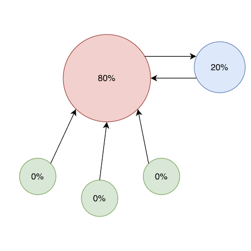

Background and History
- What is the PageRank algorithm?
- When and why was PageRank invented?
- How is the algorithm currently used?
- Why did we decide to write an article about it?
Algorithm Description
Inputs and outputs
The algorithm takes in web pages, and outputs a rating for each page, which represents the reliability or trustworthiness of a site.
How the algorithm represent webpages as nodes and connections
The algorithm works by representing the internet as a directed graph, where web pages are nodes in the graph and links between pages are the edges between nodes. For example, the example below has three web pages, each with links between each other. The corresponding graph is shown beside.
Implementation - simplified example
PageRank Visualiation Description
Interactive Graph
- Click in the area to create a node. Drag from one node to another to create connections. The sizes and percents of each node will be updated live with the pagerank algorithm!
- Explanation of representations